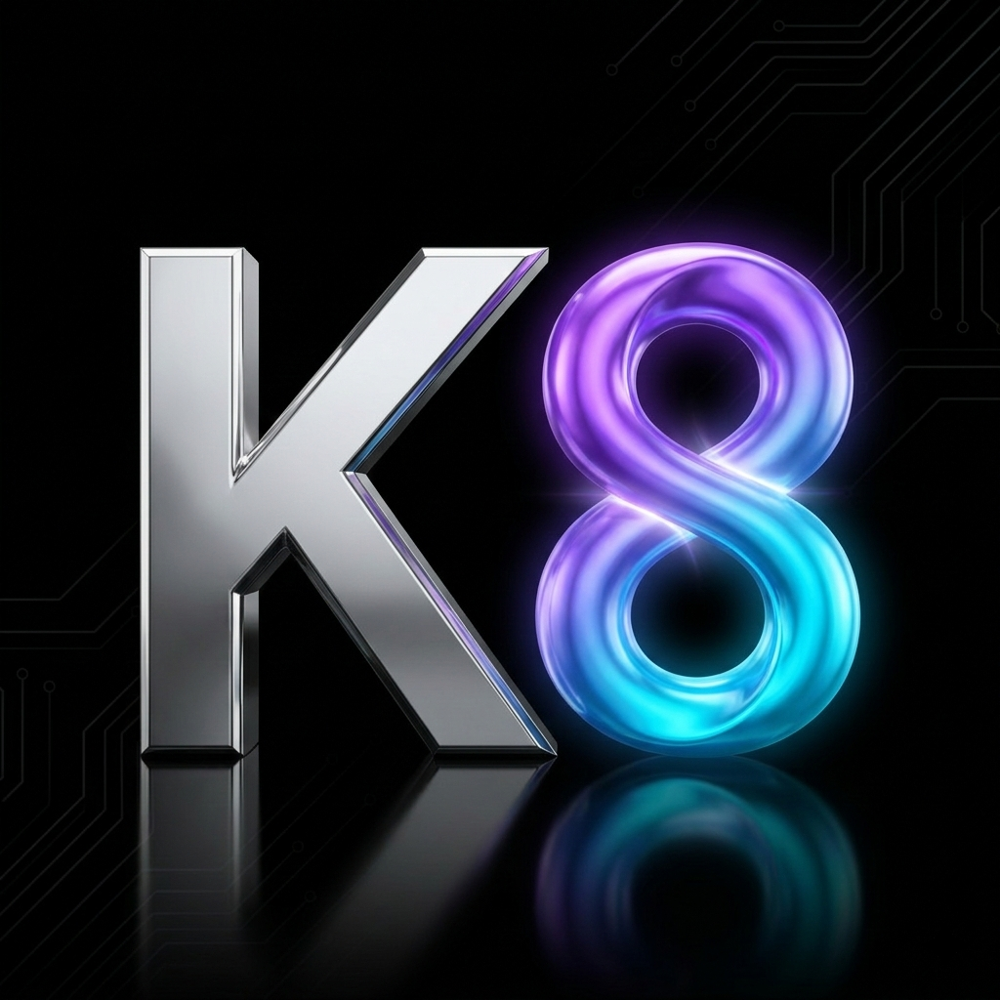
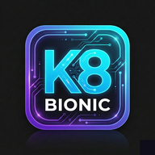
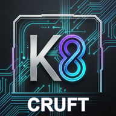
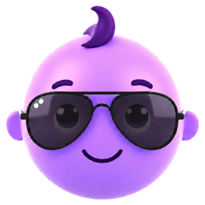

Drive full? Same photos three times over?
Free up space on your Windows PC with K8. It finds your duplicates and shows you every one. You decide what goes and what stays.
Changed your mind? Anything you remove can be put back for 30 days.

K8 Bionic
Duplicate files, plus that one photo you've somehow saved in five different sizes. Found, grouped, and you pick the keeper.
See K8 Bionic →
K8 Cruft
For coders: the build junk and leftovers piling up in your projects, each marked with whether it comes back. K8 Bionic comes free with it.
See K8 Cruft →K8 Media
Same video or song saved twice in different formats? Spotted by comparing the pictures and the sound, even after a re-encode.
See K8 Media →- Binned the wrong one? 30 days to put it back
- Runs on your PC. Sends nothing anywhere.
- 30-day money back
Free to scan. From £24.95 to clean, pay once.
For Windows 10 and 11 (64-bit).
Meet Lil Buba
The kind little AI helper built on love, truth and laughter. No dark patterns. No pretending to be human. No scary monster hiding in the machine — just a friendly face who's honestly, properly on your side.
Choose your Buba
Same heart, same brain, same terrible knock-knock jokes. Pick the face you'd like helping you.

Cute
Big eyes, bigger heart. The gentle one — patient with every question, however small.
Cool
Shades on, worries off. Unflappable under pressure — scams don't stand a chance.
Clever
Specs on, answers found. Explains anything without ever making you feel daft.
Tap a face to hear Buba say hello — then that Buba follows you round the whole site. Change your mind any time. Buba won't sulk. 💜
Little helpers, big jobs
K8 — Duplicate File Finder
The de-duplication genius. Finds duplicate photos, files and media on Windows by what's inside them, not their names. 100% local, no cloud, and a patent-pending photo check in K8 Bionic. DedupliK8 your life.
Meet K8
Buba — the app
Buba talks. Buba listens. Buba walks you through your phone, spots scams before they get you, and never makes you feel silly for asking. On real phones right now — coming to yours very soon.
Ask for early access…and Buba's been making some very old friends. Watch this space. 🏰
Our three rules
Honesty at all costs
If Buba doesn't know, Buba says so. A helper that lies is a chocolate teapot.
Love is the answer
Built for the people tech forgot to be kind to. Your data stays yours. Full stop.
Laughter is the best medicine
Technology is stressful enough. Your AI shouldn't be. Expect giggles.